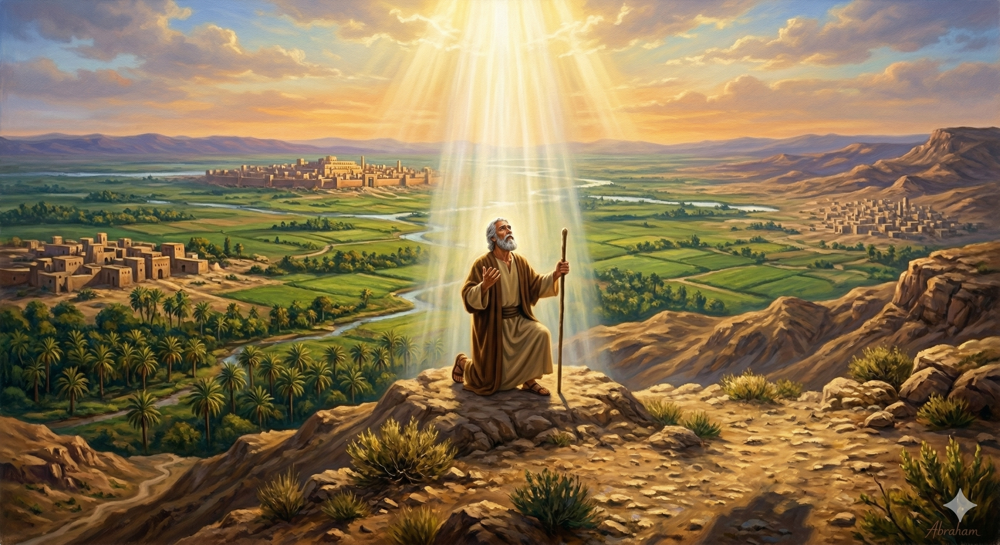

아브람과 롯이 광활한 땅 앞에 서다 — 창세기 13:9
아브람이 롯에게 이르되 우리는 한 친족이라 나나 너나 내 목자나 네 목자나 서로 다투게 하지 말자 네 앞에 온 땅이 있지 아니하냐 나를 떠나가라 네가 좌하면 나는 우하고 네가 우하면 나는 좌하리라 롯이 눈을 들어 요단 지방을 바라본즉 소알까지 온 땅에 물이 넉넉하니 여호와께서 소돔과 고모라를 멸하시기 전이었는즉 여호와의 동산 같고 이집트 땅과 같았더라 그러므로 롯이 요단 지방을 택하고 동으로 옮기니 그들이 서로 떠난지라 아브람은 가나안 땅에 거주하였고 — 창세기 13:8–12
이집트에서 돌아온 아브람은 많은 가축과 재물을 가지고 가나안으로 돌아왔습니다. 조카 롯도 마찬가지로 양 떼와 소 떼, 장막을 소유한 부유한 사람이 되어 있었습니다. 그런데 두 집안의 번영이 뜻밖의 문제를 낳았습니다. 가축이 너무 많아져서 아브람의 목자들과 롯의 목자들 사이에 다툼이 생긴 것입니다. 설상가상으로 그 땅에는 가나안 사람과 브리스 사람도 함께 살고 있었습니다(창 13:7). 하나님의 백성 사이의 내분이 이방인들 앞에서 낱낱이 드러나고 있었습니다. 이는 단순한 재산 다툼이 아니라 신앙의 증거가 걸린 문제였습니다.
이 긴장된 상황에서 아브람의 선택은 모든 상식을 뒤집는 것이었습니다. 연장자이자 가족의 어른인 그에게는 먼저 선택할 권리가 당연히 있었습니다. 그러나 아브람은 조카 롯에게 먼저 선택을 내밀었습니다. "온 땅이 네 앞에 있다. 네가 좌하면 나는 우하고, 네가 우하면 나는 좌하겠다." 이 놀라운 양보는 어디서 나온 것일까요? 하나님께서 이 땅을 자신에게 주셨다는 믿음에서 나온 것입니다. 이 땅은 결국 하나님의 손 안에 있으니, 자신이 먼저 고르지 않아도 된다는 확신이 그를 관대하게 만들었습니다. 롯은 눈에 보기 좋은 요단 평원을 선택했지만, 아브람은 하나님이 이끄시는 가나안 땅에 그대로 머물렀습니다. 그리고 롯이 떠난 직후, 하나님은 아브람에게 다시 나타나 약속을 확인해 주셨습니다. "눈을 들어 동서남북을 바라보라. 보이는 땅을 내가 너와 네 자손에게 주리라"(창 13:14–15).

롯이 요단 평원을 향해 떠나고, 아브람은 가나안에 머물다
우리는 살아가면서 내 몫을 지키려는 본능과 싸울 때가 많습니다. 가족 사이에서, 직장에서, 공동체 안에서 "내가 먼저"라는 욕심이 다툼의 씨앗이 됩니다. 아브람은 바로 그 자리에서 멈추었습니다. 권리를 주장하는 대신 양보를 선택했고, 다툼을 이기는 대신 관계를 살렸습니다. 그것이 가능했던 이유는 단 하나, 하나님의 약속을 믿었기 때문입니다. 내 손에 쥔 것을 내려놓을 수 있는 사람은 더 크신 분의 손을 신뢰하는 사람입니다.
오늘 우리의 삶에도 아브람과 같은 선택의 순간들이 찾아옵니다. 내가 먼저 선택할 수 있는 상황에서, 내가 더 유리한 자리를 차지할 수 있는 순간에, 과연 우리는 양보할 수 있습니까? 세상의 눈으로 보면 아브람의 선택은 어리석어 보였습니다. 하지만 하나님의 눈으로 보면 그것은 가장 지혜로운 행동이었습니다. 내가 좋은 땅을 포기했을 때, 하나님은 내 발이 밟는 온 땅을 약속하십니다. 믿음의 양보는 손해가 아니라 더 큰 축복으로 가는 문입니다.
"내 권리를 내려놓을 수 있는 사람은,
하나님의 약속을 손에 쥔 사람입니다.
오늘 당신은 먼저 양보할 수 있습니까?"